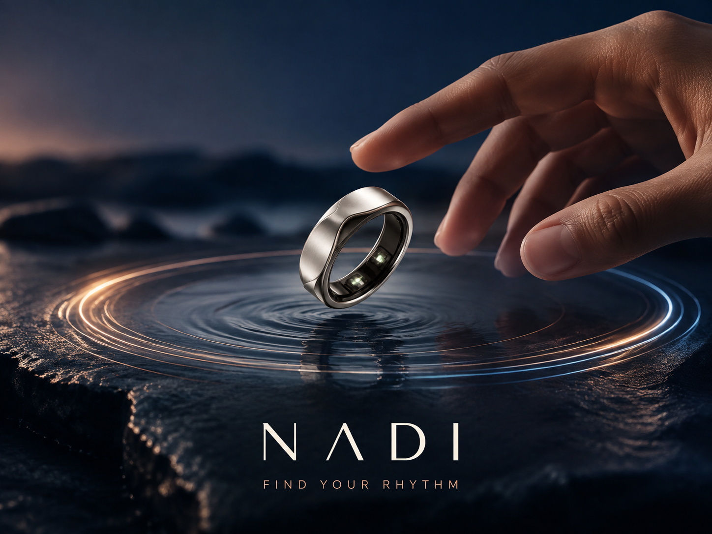
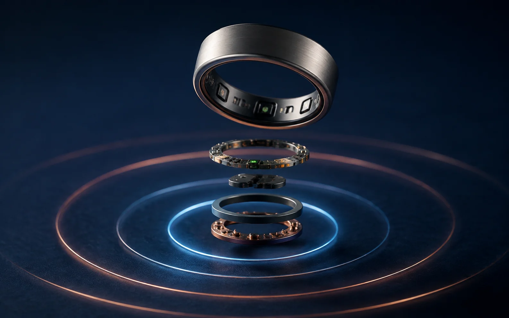

A wearable-tech launch that turns biometric data into a quieter promise: find your rhythm, without turning your life into a dashboard.

ROLEConcept + creative direction
FORMATProduct launch campaign
AUDIENCEDesign-conscious wellbeing seekers
STATUSSelf-initiated simulation
THE IDEA
Technology that feels less technical.
Most wearable campaigns lead with numbers. I wanted to start with a feeling: the moment your body settles into its own pace. The name NADI references flow and pulse, giving the fictional product a story that can stretch from biometric sensing to everyday wellbeing.
The campaign is intentionally restrained. Water, circular motion and dawn light translate invisible signals into visual cues without covering the work in interface graphics.

01 / PRODUCT TRUTH
Make the intelligence visible.
I created an exploded product frame to balance the emotional hero with credible technology. The layered components suggest sensing, processing and comfort while the ripple motif keeps the visual system connected.
Why this angle?It explains the product without becoming a technical diagram.
Why copper and blue?Warmth represents the body; cool light represents the signal.
02 / HUMAN MOMENT
Show the benefit, not a performance.
The lifestyle frame avoids the familiar running-and-sweating visual language of health technology. A quiet pause at dawn makes the product promise feel attainable and gives the viewer room to imagine their own ritual.
Creative choiceThe ring stays visible, but the person—not the device—owns the scene.
Campaign roleThis frame could support social, outdoor and the launch landing page.
WHAT I LEARNED
A strong product story needs one emotional idea and enough proof to trust it.
This exercise helped me connect positioning, visual direction and channel thinking. It also reinforced a coordination lesson: define the single campaign promise before producing variations, so every asset feels like part of the same launch.